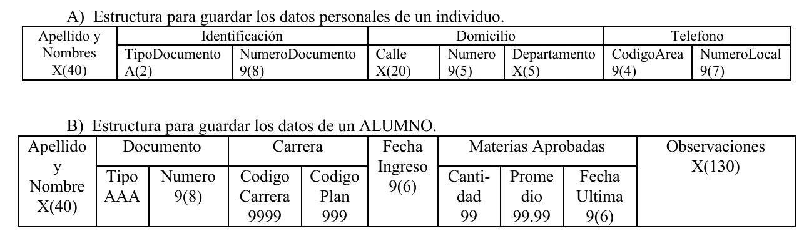

Final
Un programa sobre archivos a partir de un enunciado. La teoría sale de trabajos de alumnos de 2015, porque en el Drive no hay apunte de la cátedra.
Resumen no juzgado. Todavía nadie evaluó si alcanza para estudiar solo con esto.
Materia del pasado. Ya no está en el plan de estudios.
Esta materia no tiene apuntes de la cátedra en el Drive. Lo que sigue sale de trabajos y resúmenes de alumnos. Usalo de guía y confirmalo con la cátedra.
Lo marcado «Plan viejo» es de 2022 o antes, del plan anterior. Puede no coincidir con lo que se toma hoy.
Antes de estudiar de acá
Todo es del plan viejo, de 2009 a 2015. Las definiciones vienen de trabajos prácticos de alumnos, con su fuente al lado. Lo que no está en el material no se completó de memoria. Está en la lista de faltantes.
Cómo viene el final
Ninguno trae preguntas sueltas de teoría. Te dan un caso con sus datos y piden programar sobre archivos.
| Final | Caso | Archivos | Qué pide |
|---|---|---|---|
| 08/05/2009 | Inscriptos | Indexado y secuencial | Menú con altas, bajas y listado por impresora, ordenado por provincia |
| 26/11/2009 | Deportes de un club | Indexado | Programa de carga y otro de consulta de horarios |
| Mayo de 2010 | Deuda a proveedores | Secuencial e indexado | Definir los registros en formato gráfico. Consulta por pantalla y listado impreso |
| Diciembre de 2010 | Tareas de una organización | A identificar | Identificar al menos 3 almacenes y declararlos. Dos listados |
| Febrero de 2011 | Lotes de sueros | Indexado y secuencial | Carga, explicar si tiene que tener un orden, y consulta por pantalla con un porcentaje |
| Febrero de 2012 | Libros de una biblioteca | Secuencial e indexado | Lógica y programa. Tres estadísticas, con los datos ya cargados |
Los enunciados completos están en Ejercicios.
Lo que se repite, contado sobre esos 6:
- Secuencial más indexado en el mismo enunciado: 4 (05/2009, 05/2010, 02/2011 y 02/2012).
- Pedido explícito de un programa: 5, todos menos 12/2010.
- Listado ordenado por un campo: 3 (05/2009, 12/2010 y 02/2012).
- Consulta de un dato puntual: 3 (11/2009, 05/2010 y 02/2011).
- Listado por impresora, dicho así: 3 (05/2009, 05/2010 y 12/2010).
- Programa de carga: 2 (11/2009 y 02/2011). El de 02/2012 aclara que los datos se dan por cargados.
- Datos que se repiten con un tope, como hasta 3 teléfonos o hasta 6 horarios: 2 (11/2009 y 05/2010).
La forma de un programa
Un programa tiene cuatro divisiones, en este orden. Se ven en el ejemplo de lectura del Trabajo Práctico 3 de alumnos, de 2015. Según ese mismo trabajo, el ejemplo sale de páginas web y no figura compilado.
IDENTIFICATION DIVISION.
PROGRAM-ID. HELLO.
ENVIRONMENT DIVISION.
INPUT-OUTPUT SECTION.
FILE-CONTROL.
SELECT STUDENT ASSIGN TO 'input.txt'
ORGANIZATION IS LINE SEQUENTIAL.
DATA DIVISION.
FILE SECTION.
FD STUDENT.
01 STUDENT-FILE.
05 STUDENT-ID PIC 9(5).
05 NAME PIC A(25).
WORKING-STORAGE SECTION.
01 WS-STUDENT.
05 WS-STUDENT-ID PIC 9(5).
05 WS-NAME PIC A(25).
01 WS-EOF PIC A(1).
PROCEDURE DIVISION.
OPEN INPUT STUDENT.
PERFORM UNTIL WS-EOF='Y'
READ STUDENT INTO WS-STUDENT
AT END MOVE 'Y' TO WS-EOF
NOT AT END DISPLAY WS-STUDENT
END-READ
END-PERFORM.
CLOSE STUDENT.
STOP RUN.| División | Qué lleva en el ejemplo |
|---|---|
IDENTIFICATION | El nombre del programa, en PROGRAM-ID |
ENVIRONMENT | Qué archivos usa, en FILE-CONTROL, con un SELECT por archivo |
DATA | El registro de cada archivo, en FILE SECTION, y las variables, en WORKING-STORAGE SECTION |
PROCEDURE | Las instrucciones. Termina en STOP RUN |
Leelo de abajo para arriba. PROCEDURE abre el archivo, lee hasta el final y muestra cada registro. Todo lo de arriba existe para que esas pocas líneas sepan con qué trabajan.
Los datos
Números de nivel
Fuente: Trabajo Práctico 2 de alumnos, 2015, que cita «Clase 3, Cobol 2015» y a M. Koutchouk, COBOL: construcción lógica de programas (1986).
El número de nivel denota la jerarquía de los datos.
| Nivel | Para qué | Dónde empieza |
|---|---|---|
01 | Nombre de un registro o estructura | Zona A |
02 a 49 | Cualquier campo subordinado, elemental o compuesto | Zona B |
66 | Cláusula RENAMES | Zona B |
77 | Campos independientes | Zona A |
88 | Nombres de condición | Zona B |
La zona A son las columnas 8 a 11 de la hoja de codificación. La zona B arranca en la columna 12. El trabajo manda a la zona B todo menos los niveles 01 y 77.
Los números no tienen por qué ser correlativos. El mismo trabajo y el Trabajo Práctico 3 usan 10 y 05 directo abajo de un 01.
Un campo elemental es el que no se divide. Varios elementales agrupados forman un elemento de grupo.
01 DOMICILIO.
02 TIPO PIC XX.
02 NOMBRE PIC X(20).
02 NUMERO PIC 9(4).Dos frases del trabajo que confunden
El trabajo dice «un campo compuesto tendrá un nivel superior a cualquiera de sus campos elementales». Se refiere a la jerarquía. El número es menor, como se ve arriba: DOMICILIO es 01 y sus campos son 02.
También dice que el 01 «solo podrá pertenecer al nombre de un registro o estructura», y después muestra 01 RAYA PIC X(10), que no se divide. Si te lo preguntan, confirmalo con la cátedra.
En criollo
Es como el índice de un libro. El 01 es el capítulo, el 02 la sección, el 03 el apartado. Lo que importa es que el de adentro tenga un número más alto que el de afuera.
Cómo se ve dibujada una estructura
La Práctica 1 de la cátedra dibuja los registros en cajas, con el nombre y el modelo de cada campo. El final de mayo de 2010 pide definir los registros «en formato gráfico». Esta es la única muestra del Drive de cómo se dibuja, y el final no aclara si espera esa forma.

Pasar esos dibujos a código es el ejercicio 14 de esa práctica, así que acá no va resuelto. La hoja completa está en Ejercicios.
La cláusula PICTURE
Fuente: Trabajo Práctico 2 de alumnos, 2015. La cláusula imagen define el tipo de dato, el signo, la posición del punto decimal y la longitud. Las prácticas de la cátedra llaman «modelo» a lo que va en esa cláusula.
| Símbolo | Significa |
|---|---|
9 | Valor numérico |
A | Alfabético |
X | Alfanumérico |
V | Decimal implícito |
S | Signo |
P | Decimal asumido |
Los tipos:
- Numérico: solo dígitos del 0 al 9.
- Alfabético: letras de la A a la Z y espacios.
- Alfanumérico: dígitos, letras y caracteres especiales.
El signo se usa con datos numéricos. El punto decimal se puede usar con datos numéricos, y según el trabajo su posición «no se incluye en los datos».
La longitud se escribe repitiendo el símbolo o con paréntesis. El trabajo usa PIC XX y PIC X(20), y las prácticas usan 9999 y 9(4) para lo mismo.
Los modelos de edición no están explicados
La Práctica 1 trabaja mucho con modelos como los de Z, * o el signo de moneda. Ningún material del Drive dice cómo funcionan. Ver faltantes.
VALUE, REDEFINES y RENAMES
Fuente: Trabajo Práctico 2 de alumnos, 2015.
VALUE es opcional. Va después del PIC e indica el valor inicial del campo hasta que se modifique. Sirve para elementales y para grupos.
01 RAYA PIC X(10) VALUE "----------".REDEFINES sirve para darle a un dato otro formato o cambiarlo a otro tipo. El trabajo agrega que también se usa para crear arrays, sin mostrarlo.
01 WS-OLD PIC X(10).
01 WS-NEW1 REDEFINES WS-OLD PIC 9(8).
01 WS-NEW2 REDEFINES WS-OLD PIC A(10).En criollo
Es el mismo dato con otra etiqueta y otra forma de leerlo. No agrega un dato nuevo.
RENAMES reagrupa datos con un nombre nuevo y usa el nivel 66. Los datos renombrados tienen que venir en secuencia. No se pueden usar los niveles 01, 77 ni 66.
01 WS-OLD.
10 WS-A PIC 9(12).
10 WS-B PIC X(20).
10 WS-C PIC A(25).
10 WS-D PIC X(12).
66 WS-NEW RENAMES WS-A THRU WS-C.Los archivos
Qué es un archivo
Fuente de esta sección: Trabajo Práctico 3 de alumnos, 2015.
Es un conjunto de registros homogéneos, almacenados en soporte externo, con una relación lógica entre sí. Cada dato de un registro es un campo.
Tipos según su uso
| Clase | Tipos |
|---|---|
| Permanentes | De constantes, maestros, históricos |
| De movimientos | Altas, bajas, modificación |
| De trabajo | No los divide |
Secuencial e indexado
Un archivo secuencial guarda los registros físicamente contiguos en el soporte. A sus registros solo se accede de forma secuencial. Esta es la declaración que da el trabajo:
SELECT [OPTIONAL] nombre-de-fichero-interno
ASSIGN TO dispositivo [nombre-de-fichero-externo]
[ORGANIZATION IS] [LINE] SEQUENTIAL
[ACCESS MODE IS SEQUENTIAL].Errata del trabajo
El Trabajo Práctico 3 imprime [[ORGANIZATION IS]][LINE] SEQUENTIAL], con los corchetes desparejos. Acá quedó [ORGANIZATION IS] [LINE] SEQUENTIAL, porque es la única lectura con los corchetes parejos.
Un archivo indexado se declara con su clave. El trabajo no lo define con palabras, pero lo muestra en sus ejemplos:
SELECT STUDENT ASSIGN TO IN1
ORGANIZATION IS INDEXED
ACCESS IS RANDOM
RECORD KEY IS STUDENT-ID
FILE STATUS IS FS.Otro ejemplo del mismo trabajo usa ACCESS DYNAMIC. Ninguno explica la diferencia entre RANDOM y DYNAMIC.
Esos 4 enunciados dicen de entrada cuál archivo es secuencial y cuál indexado. Los de 05/2009, 05/2010 y 02/2011 dicen además cuál es la clave. Tu declaración tiene que respetar esa organización.
Los verbos
El trabajo nombra OPEN, READ, WRITE, REWRITE, DELETE y CLOSE.
| Verbo | Sintaxis que da el trabajo |
|---|---|
OPEN | OPEN "mode" file-name. |
READ secuencial | READ file-name NEXT RECORD INTO ws-file-structure con AT END y NOT AT END |
READ por clave | READ STUDENT KEY IS STUDENT-ID con INVALID KEY |
WRITE | WRITE record-buffer [FROM ws-file-structure] |
REWRITE | REWRITE record-buffer [FROM ws-file-structure] |
DELETE | DELETE file-name RECORD con INVALID KEY y NOT INVALID KEY |
CLOSE | CLOSE file-name. |
Los modos de OPEN son entrada, salida, ampliar y entrada/salida.
| Modo | En el código | Lo muestra el trabajo |
|---|---|---|
| Entrada | OPEN INPUT | Sí, para leer |
| Salida | OPEN OUTPUT | No, ver la errata de abajo |
| Ampliar | OPEN EXTEND | Sí, para agregar con WRITE |
| Entrada/salida | OPEN I-O | Sí, para REWRITE y DELETE |
Errata del trabajo
El trabajo dice «sintaxis para leer» en WRITE y en REWRITE. Es un error de traducción. Sus propios ejemplos muestran que WRITE graba un registro y que REWRITE actualiza uno existente.
Da los modos de OPEN solo en castellano. OUTPUT no aparece en ningún ejemplo del Drive. Lo puse yo como la palabra para «salida». Confirmalo en tu manual.
Las comillas curvas de ‘KEY IS NOT EXISTING’ en el trabajo son cosa de Word. En un programa no las copies.
Los ejemplos de archivos no están probados
El trabajo informa la compilación de otros tres programas, no de estos. Tres de sus ejemplos dejan FD STUDENT sin punto, y usan FILE STATUS IS FS sin declarar FS. Sirven para ver la forma, no para copiarlos.
Lo que se pide y el material no explica
Estos temas aparecen en los finales o en la Práctica 1, y ningún archivo del Drive los explica. Vas a necesitar un manual o a tu comisión.
| Tema | Dónde aparece |
|---|---|
| Ordenar datos para un listado | Finales de 05/2009, 12/2010 y 02/2012 |
| Imprimir un listado, con títulos y agrupado por un campo | Finales de 05/2009, 05/2010 y 12/2010 |
| Datos que se repiten con un tope | Finales de 11/2009 y 05/2010 |
| Un menú de opciones | Final de 05/2009 |
Condiciones, totales y porcentajes en PROCEDURE | Finales de 05/2010, 02/2011 y 02/2012 |
| Reglas de los nombres que crea el programador | Práctica 1, ejercicio 1 |
| Literales numéricos y no numéricos | Práctica 1, ejercicios 2 a 4 |
| Constantes figurativas | Práctica 1, ejercicio 5 |
Usos DISPLAY, COMPUTATIONAL y COMPUTATIONAL-3 | Práctica 1, ejercicios 6 y 7 |
| Categorías de un ítem según su modelo | Práctica 1, ejercicio 8 |
Modelos de edición y DECIMAL-POINT IS COMMA | Práctica 1, ejercicios 11 a 13 |
El contexto: mainframe, terminal y batch
Fuente: Trabajo Práctico 1 de alumnos, 2015, que sale de páginas web. Ningún final lo pide. Los trabajos de 2015 muestran compilaciones en un sistema z/OS, así que da una idea de dónde se corrían los programas.
- Mainframe: computadora grande, potente y costosa. La usa una gran compañía para procesar muchos datos, como transacciones bancarias.
- Terminal: dispositivo para interactuar con una computadora. También se lo llama consola.
- Emulador de terminal: programa que simula el funcionamiento de una terminal.
- Procesamiento batch: los programas, los datos y las órdenes se remiten juntos, en lote. Hay poca o ninguna interacción con el usuario mientras corre.
Quiz del final
Elegí una opción para ver la explicación. Las que dicen «Se tomó» salieron de exámenes reales.
- 1
¿En qué columnas está la zona A de la hoja de codificación?
La zona A son las columnas 8 a 11. La zona B arranca en la 12.
- 2
¿Para qué se usa el nivel 77?
El 77 describe campos independientes. El 88 es para nombres de condición y el 66 para RENAMES.
- 3
Dentro de una estructura, ¿los números de nivel tienen que ser correlativos?
El trabajo lo dice así: los números de nivel utilizados no tienen por qué ser correlativos.
- 4
En una cláusula PICTURE, ¿qué indica el símbolo V?
V es decimal implícito. El signo es S y el valor inicial va en la cláusula VALUE.
- 5
¿Qué admite un dato alfabético?
Alfabético son letras y espacios. Con dígitos y caracteres especiales ya es alfanumérico.
- 6
¿Qué hace la cláusula VALUE?
VALUE es opcional y da el valor inicial, que dura hasta que el campo se modifica.
- 7
Según el material, ¿qué condición tienen los datos a los que se les aplica RENAMES?
Los datos renombrados deben venir en secuencia, y no se pueden usar los niveles 01, 77 ni 66.
- 8
¿Qué caracteriza a un archivo secuencial?
Almacena los registros físicamente contiguos y solo se accede a ellos de forma secuencial.
- 9
En los ejemplos del material, ¿con qué cláusula se indica la clave de un archivo indexado?
Los ejemplos usan RECORD KEY IS STUDENT-ID. FILE STATUS es otra cláusula del mismo SELECT.
- 10
¿Cuál de estas clases incluye archivos de altas, bajas y modificación?
Altas, bajas y modificación son archivos de movimientos. Los permanentes son de constantes, maestros e históricos.
- 11
En los ejemplos del material, ¿con qué modo se abre un archivo antes de un REWRITE?
El ejemplo de REWRITE usa OPEN I-O STUDENT. El de DELETE, también.
- 12
En una lectura secuencial, ¿qué frase del READ atiende el fin de archivo?
AT END se ejecuta al llegar al final. INVALID KEY aparece en la lectura por clave.
- 13
¿Qué caracteriza al procesamiento batch?
Se remite todo junto en forma de lote y casi no hay interacción con el usuario mientras corre.
Todavía no respondiste ninguna.